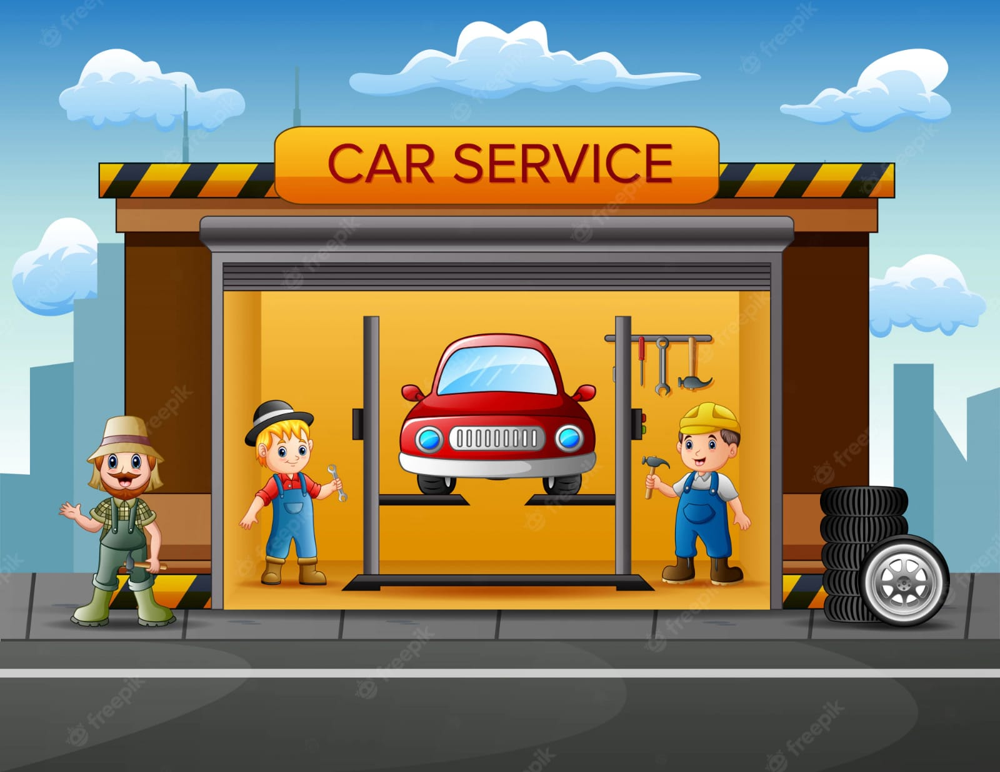

There where no people around to know about the place or the mechanic shops around him.If someone even tell about mechanic shop the person should go to mechanic shop and he has to request the mechanic to come with him.which is sometimes not possible.Here the solution comes “ONLINE MECHANIC CONSULTANCY SYSTEM” through which a person can get the details about the nearby mechanics available and directly consult them by requesting service through website which will make the work of the costumer easy.